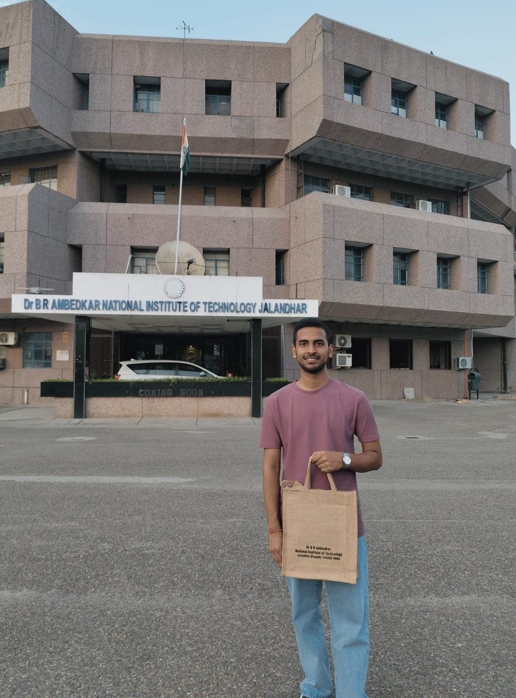

Hello! I am Shashank Jha

I am a first-year Computer Science and Engineering student at the National Institute of Technology Jalandhar. I am interested in learning programming, developing websites and exploring new technologies. I enjoy improving my problem-solving skills and learning something new every day.
My Interests
- Programming in C++
- Web Development using HTML
- Artificial Intelligence and Machine Learning
- Problem Solving and Competitive Programming
My Future Goals
My goal is to become a skilled software engineer with strong programming and problem-solving abilities. I want to learn Data Structures and Algorithms, build useful projects, participate in hackathons and secure good internship opportunities. I also want to improve my communication skills and contribute to meaningful technology projects.